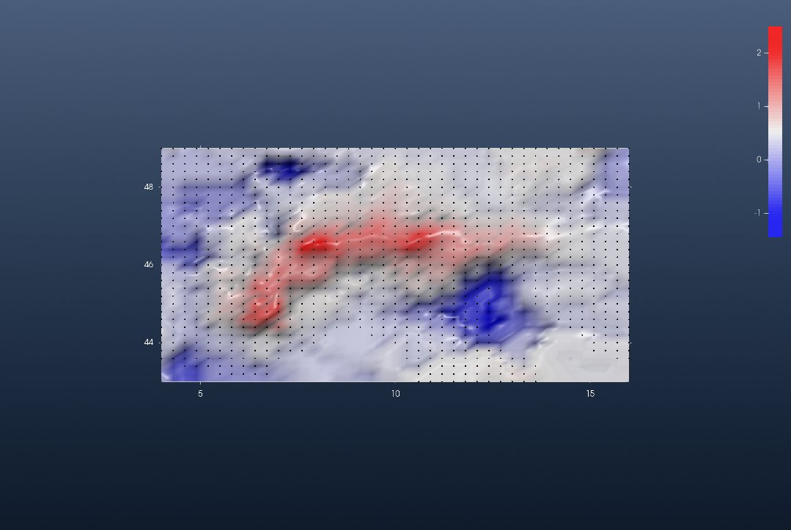
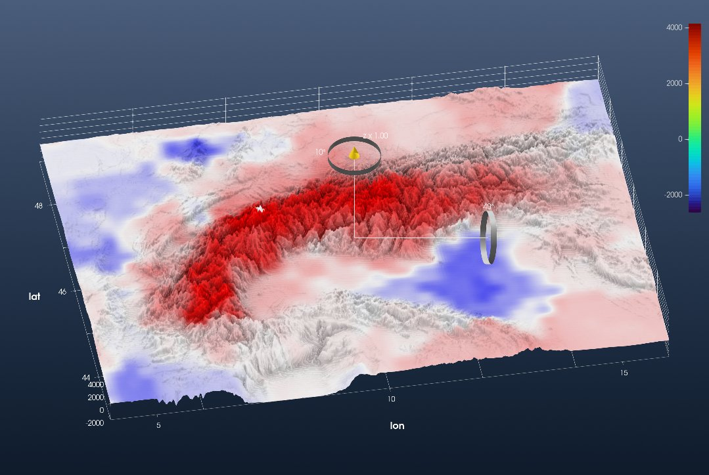
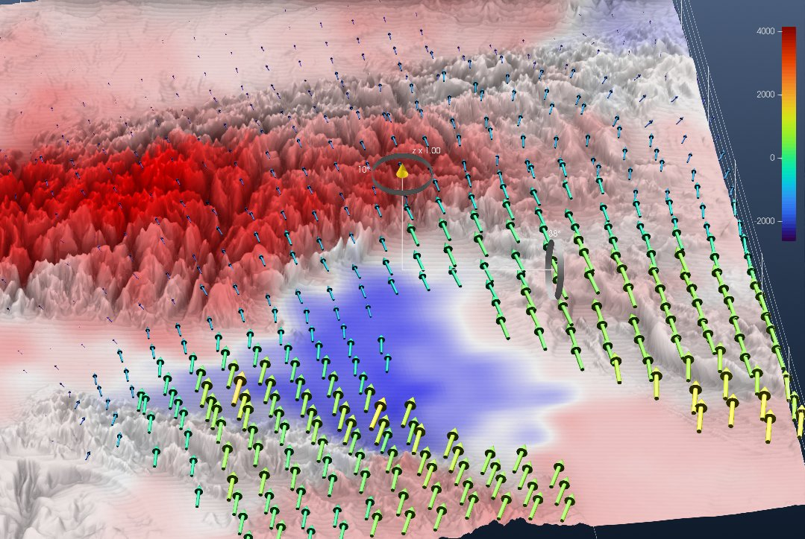

Tutorial: GPS Velocities of the Alps (Sánchez et al., 2018)
This is the GeophysicalModelGenerator.jl tutorial Plotting GPS Vectors redone with iGMT and plain GMT.jl commands: no CSV.jl, no Interpolations.jl, no ParaView.
The data are the surface deformation model of the Alpine region of
Sánchez, L., C. Völksen, A. Sokolov, H. Arenz and F. Seitz (2018). Present-day surface deformation of the Alpine region inferred from geodetic techniques. Earth System Science Data, 10, 1503–1526. Data: doi:10.1594/PANGAEA.886889
There are two files:
ALPS2017_DEF_VT.GRDholds the vertical velocity on a regular 0.3° × 0.2° grid over 4–16° E, 43–49° N.ALPS2017_DEF_HZ.GRDholds the horizontal (east, north) velocity, only at the nodes on land.
Velocities are in m/yr.
1. Read the data
Both files start with 17 lines of text: the title, the authors, and a description of the columns. The data rows follow. GMT's h=17 skips that header. incols keeps the columns we need and scales the velocities to mm/yr on the way in (+s1000). GMG does these three steps with CSV.File, parse_columns_CSV and a *1000.
using InteractiveGMT, GMT
url = "https://store.pangaea.de/Publications/Sanchez-etal_2018/ALPS2017_DEF_"
Vz = gmtread(url * "VT.GRD", data=true, h=17, incols="0,1,2+s1000") # lon lat Vz
Vh = gmtread(url * "HZ.GRD", data=true, h=17, incols="0,1,2+s1000,3+s1000") # lon lat Ve VnVz has 1271 rows, one per node of the 41 × 31 grid. Vh has 1111 rows: the same grid, minus the 160 nodes at sea.
2. The vertical velocity as a grid, and where the horizontal stations are
GMG reshapes the columns into 41 × 31 arrays. Because the points are the nodes of a regular grid, xyz2grd turns them into a real GMTgrid directly:
Gvz = xyz2grd(Vz, region=(4, 16, 43, 49), inc=(0.3, 0.2))
iview(Gvz; cmap=:polar, data=Vh.data[:, 1:2], mode=:points, data_color=:black, data_size=4)The data= keyword overlays the positions of the horizontal-velocity nodes as black points. This one view is GMG's first two scatter plots: the full grid of vertical velocities, and the horizontal nodes that stop at the coast:

Uplift (red, up to 2.5 mm/yr) follows the arc of the Alps. The Po plain and the northern Adriatic subside (blue).
For the horizontal field, GMG fills a NaN array node by node with a search loop. xyz2grd does the same thing: a node with no data stays NaN. Keep these two grids if you want GMT → grdvector later:
Gve = xyz2grd(Vh[:, [1, 2, 3]], region=(4, 16, 43, 49), inc=(0.3, 0.2)) # east, NaN at sea
Gvn = xyz2grd(Vh[:, [1, 2, 4]], region=(4, 16, 43, 49), inc=(0.3, 0.2)) # north, NaN at sea
for G in (Gve, Gvn)
G.proj4 = "+proj=longlat +datum=WGS84 +no_defs" # they are lon/lat
endThe last line matters if you write these grids to disk. xyz2grd labels its output "+xy", and gmtwrite currently fails on that label with "Failed to initialize SRS based on PROJ4 string".
3. Vertical velocity on the topography
GMG interpolates the elevation onto the GPS nodes and shows the velocity grid bent over the relief. iGMT goes the other way: it keeps the full-resolution topography and paints the velocity on it as a draped image. grdsample brings Gvz to the 1′ spacing of the DEM, and grdimage with img_out=true returns it coloured, as a GMTimage, instead of plotting it:
topo = grdcut("@earth_relief_01m", region=(4, 16, 43, 49))
Cvz = makecpt(cmap=:polar, range=(-2.5, 2.5)) # mm/yr, white = 0
Ivz = grdimage(grdsample(Gvz, region=(4, 16, 43, 49), inc="1m"), cmap=Cvz, img_out=true)
fig = iview(topo; drape=Ivz)Switch to 3D on the toolbar and turn the view with the gizmo. The colour bar is the elevation's. The drape uses Cvz: blue −2.5, white 0, red +2.5 mm/yr.

This is GMG's third figure. The uplift follows the high ground. It peaks at 2.5 mm/yr in the central Swiss Alps (8.2° E, 46.6° N) and is about 1.9 mm/yr at Mont Blanc.
4. The horizontal velocity vectors
In ParaView, GMG draws the vectors with the Glyph filter. In iGMT, a table of x y u v rows is an arrow field. Write the horizontal table out:
gmtwrite("ALPS2017_Vh_mm_yr.txt", Vh)Then in the same window, choose File → Open xy(z) → Import Arrow field and pick that file. Each vector becomes a solid 3-D arrow: a shaft and a cone, the same glyph as the Fault plane demo, and the same kind of glyph GMG draws with ParaView's Glyph filter.
- Length: scaled by magnitude, so the longest arrow is 0.9 of the station spacing.
- Colour: by magnitude.
- Position: each arrow stands on the highest relief under its own length, so it is not buried in the slope it crosses.
The whole field is one row in Scene Objects. Right-click it and open Arrow properties to:
- pick another colormap (Colour by magnitude…; the figure uses
viridis, which reads better than the defaultjetover the red and blue velocity drape); - paint the field in one Single colour…;
- stretch or shrink it with Arrow length….
In a flat 2-D view the arrows become flat arrow shapes, and on the globe they follow the local east and north.

This is GMG's last figure, seen here over the eastern Alps. The arrows are nearly still in the west. Towards the south-east they grow and turn north: this is Adria pushing into the Alps, at up to 3.3 mm/yr relative to stable Europe.
The same field can also come from the two grids of step 2. Save them with gmtwrite("Ve.grd", Gve) and gmtwrite("Vn.grd", Gvn), then open GMT → grdvector and name them as the two components. That dialog adds grdvector's own controls: node spacing, scale, and colour by magnitude. It draws the same solid arrows by default. Untick Solid 3-D arrows to get GMT-style line arrows with the head options instead.